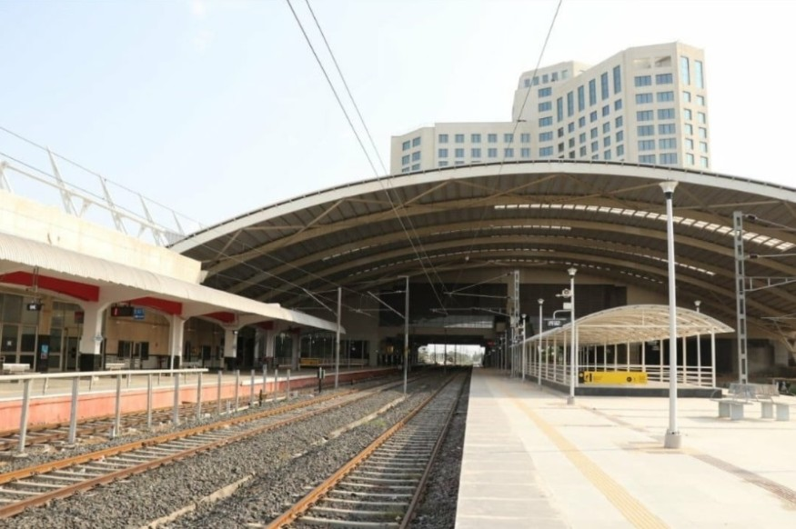
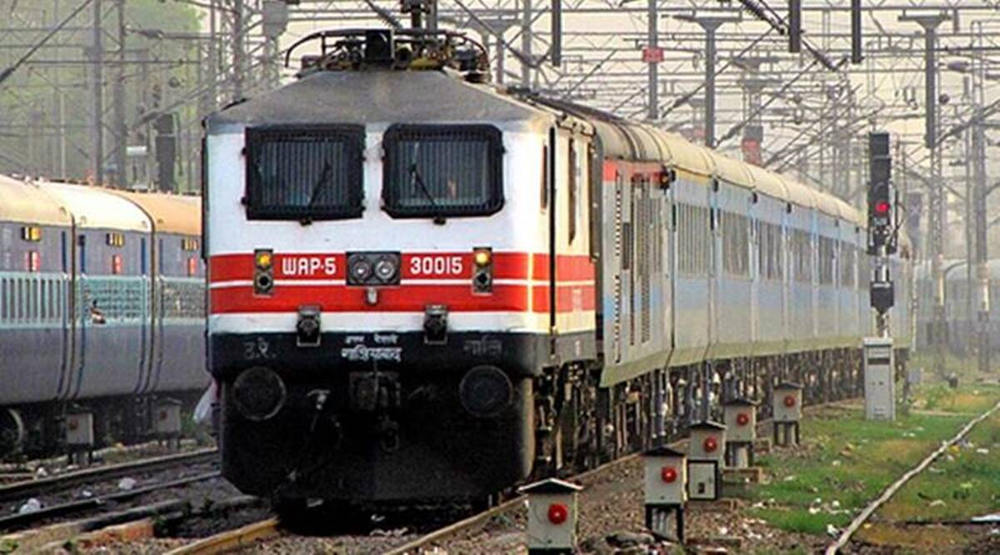
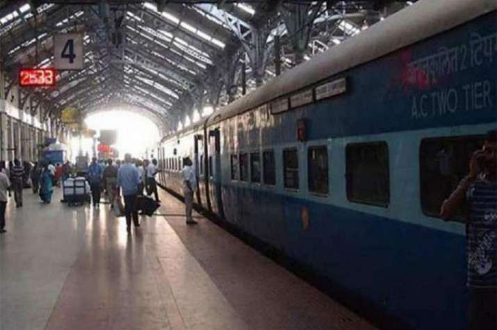
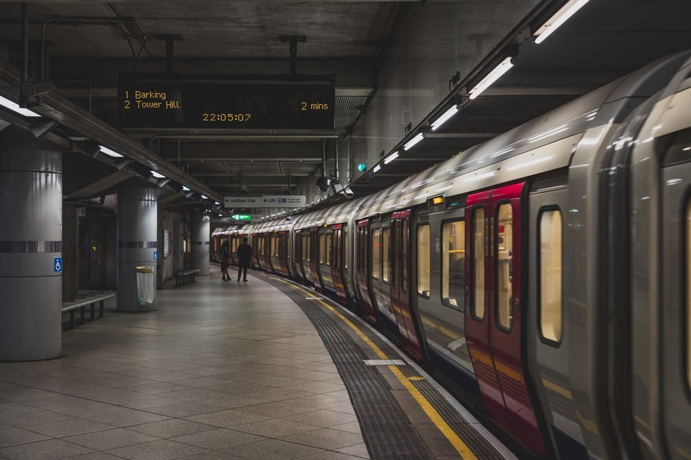

Locomotion is easy!
We provide you with the top 5 places to explore based on your needs. Select the requirement from the given menu and let's get started!!!
Railway Stations!
Kanpur Central!

Follow up the directions!
Kanpur Central is a central and junction railway station in the city of Kanpur and is one of the five central Indian railway stations. It is third busiest in country after Howrah Jn and New Delhi railway station. It is a major railway station between Howrah Jn and New Delhi.
Old Kanpur Railway Station!
Follow up the directions!
Kanpur Junction (also known as Kanpur Purana) was a former station in Kanpur on the Kanpur–Allahabad line opened in 1859 and closed after the opening of Kanpur Central, the present station.
After the first passenger train service was inaugurated between Bombay and Thane, this was the fourth railway line in India opened from Allahabad to Kanpur (180 km) on 3 March 1859, which was the first passenger railway line in North India. This was followed in 1889, by the Delhi–Ambala–Kalka line.
Govindpuri Junction!
Follow up the directions!
Govindpuri Junction or Kanpur South is a railway station in Kanpur which caters 650,000 passengers to their destinations. It is the second busiest railway station in Kanpur followed by Kanpur Central.
Kanpur Anwarganj!
Follow up the directions!
It has three platforms. It was constructed during the British Raj. It has one big clock on its main building. It is on the Farrukhabad–Kanpur line. Until 2006 it was a metre-gauge station. In 2006 Railway Minister Lalu Prasad Yadav reopened the line as a broad-gauge railway line towards Lucknow. The first station superintendent was Mr. V.N. Pandey. In 2008 a broad-gauge line opened towards Mathura too.
Chandari!

Follow up the directions!
Chandari Junction railway station is on the Kanpur-Allahabad line. Currently EMU/Passenger trains only stop here. There has been a proposal to convert Chandari into a terminal station.
Metro Stations!
Under Construction!
Metro stations in Kanpur are under construction and will be available soon. Meanwhile you can opt for other ways to travel. All means are available as per your need!